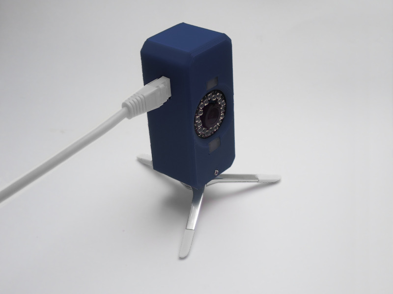
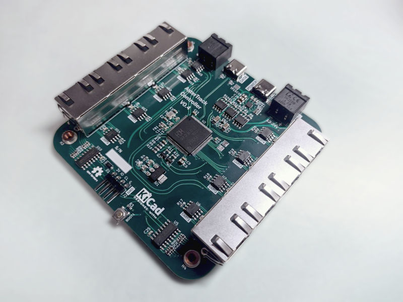
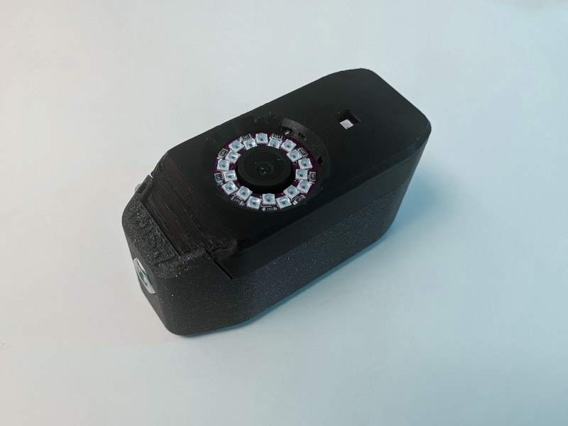
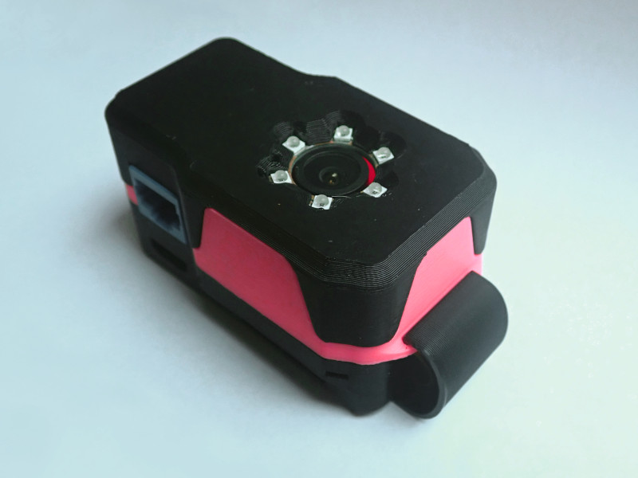
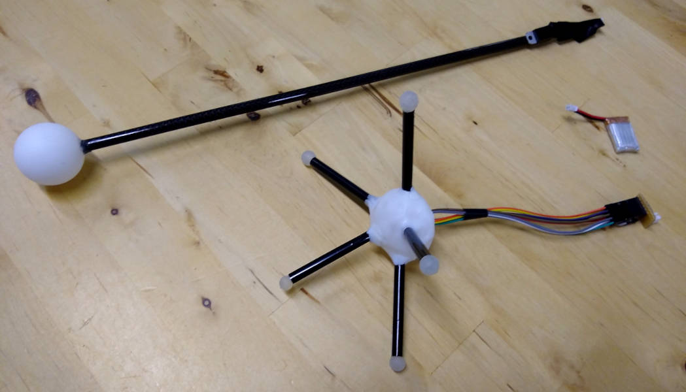
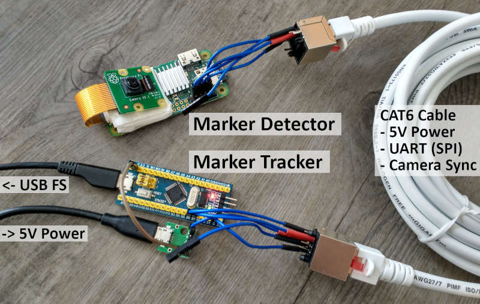

What is AsterTrack?
AsterTrack is a custom multi-camera system designed to track a set of markers in 3D space. This so-called optical tracking is commonly used in professional motion capture and virtual reality setups, but typically costs several thousands of euros. AsterTrack aims to implement the same concept with much less expensive hardware, and pioneer a user-friendly multi-camera experience. The advantage over other consumer VR tracking systems is that it is external and accurate like SteamVR tracking, while allowing for inexpensive and lightweight passive trackers that users can create themselves, even from everyday objects.How does it work?
There are three main components to the AsterTrack system:AsterTrack Cameras - Raspberry Pi based tracking cameras with onboard marker processing
AsterTrack Controller - Hub that synchronises the cameras and connects them to a computer
AsterTrack Configurator - PC software that performs the tracking and interfacing
This system can track the position of markers - both active markers (LEDs) as well as passive (retroreflective) markers - as well as fully tracked targets composed of unique sets of such markers, enabling rotational tracking without an IMU. Each AsterTrack Camera only sees these markers in 2D as bright dots, and by associating them between frames and multiple calibrated cameras it is possible to infer their 3D position.
Targets are seen by the cameras as clusters of bright dots, much like asterisms are seen through a telescope, hence the name AsterTrack. Asterisms are small star clusters in the sky, derived from the Greek word for star, asteris. Humans have long assigned meaning to these 2D structures, but their 3D positions can be inferred only now using multiple viewpoints (parallax).
How is this possible?
The main goal is to maintain the high quality expected from optical tracking while bringing the cost down as much as possible. Key to this is the processing hardware of the AsterTrack Cameras, without which all images would need to be processed on the host computer, which is infeasible at any meaningful quality and not scalable. Instead, the image processing happens on a Raspberry Pi Zero, which was widely considered the cheapest single board computer (SBC) on the market prior to the chip shortage. Using low-level assembly code on the internal QPU a high throughput and low processing latency have been achieved. The OV9281 camera sensor we use has a global-shutter and is externally synchronised, enabling accurate tracking with 0.9 MP frames at 120Hz.
The AsterTrack Controller is functionally simple, but crucial to the low-latency communication between the Cameras and the host, and the synchronisation of the Cameras. The Controller communicates with the Cameras via UART over RS-422 (differential pairs) and with the computer via USB 2.0 HS. Ethernet with PoE was not chosen due to component cost and lacking user experience during setup.
The rest of the magic happens in the host software, including the user-friendly calibration system and innovative tracking algorithms. Calibration requires only one marker to be waved around in front of at least three AsterTrack Cameras (or two with the same lens). After that, a constellation of markers can be calibrated as a target to be used for positional and rotational tracking. Targets can be created by the user, by applying markers of special retroreflective tape or infrared LEDs to a tracker base, provided the constellation of markers is sufficiently unique. This can be used to track almost any everyday object with little to no intrusion.
Roadmap
The hardware is mostly designed and verified.The software is almost ready, but work is still in progress to better calibrate targets.
We plan to launch a crowdfunding campaign in 2023 and release sources and designs at that point.
All Hardware Design after 2021 by JX35
2023

Prototype Tracking Camera V0.3 with all final capabilities

Prototype Tracking Controller V0.4 supports 8 cameras with USB-PD, USB 2.0 HS, and Sync & Power IO for larger setups
2022

Prototype Tracking Camera V0.2 with improved case design
Prototype Tracking Camera V0.2 has ESD protections, uses RS-422, a smaller camera module and more LEDs

Prototype Tracking Camera V0.1 uses custom PCBs and adds support for passive markers
2021
Early Prototype Tracking Cameras with minimal wiring and components

Early Target and Calibration Wand made from active markers (Infrared LEDs)
2019-2020

First proof-of-concept hardware, including Tracking Camera (Marker Detector) and Tracking Controller (Marker Tracker)